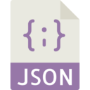

Vision
Je suis particulièrement sensible aux qualités graphiques, ergonomiques et d’organisation des contenus. Ainsi, j’utilise les concepts de la Programmation Orientée Objet pour faciliter l’interactivité, la modularité et la mise à jour des applicatifs. Je suis spécialisé également dans l’Accessibilité web : Schema.org, RDFa, micro-données, WCAG & SEO
Langages & Framework


- 